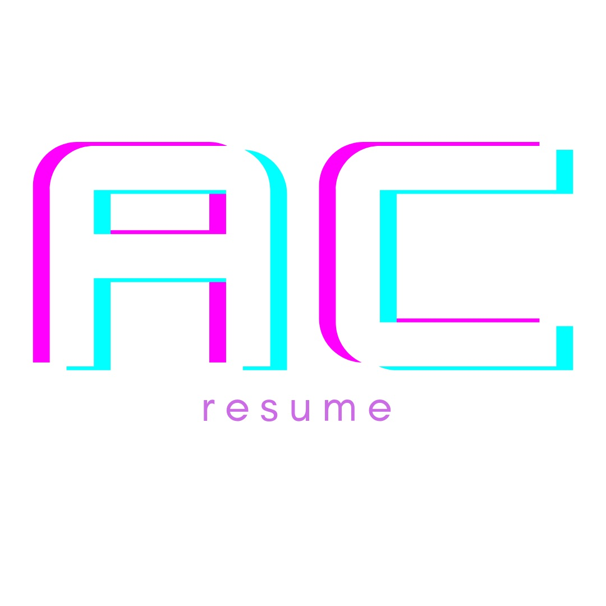

Aiyana's Work Projects
Bank of America Internship
For over a year now my absolute favorite thing to do has been take SoulCycle classes at the studio in Ann Arbor! I've taken around fifty classes so far and it is my favorite way to workout and get some cardio in while at college.
PennApps Hack-a-Thon Project
Traveling and seeing the world is so important to me because I love getting to learn about new places and people. Some of my favorite places I've gone are Greece, France, Italy, and Malta. However, my favorite city in the world is actually in the Unitied States and that is San Francisco!
Resume, Linkedin, & GitHub
If you want to get to know more about my work experience, projects, or find my code here are the links to my Resume, Linkedin, and GitHub pages!
